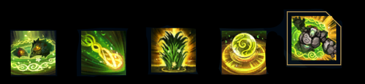
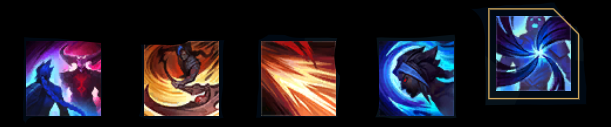

CHAMPIONS
ALL 155 CHAMPIONS:
Aatrox, Ahri, Akali, Alistar, Amumu, Anivia, Annie, Aphelios, Ashe, Aurelion Sol, Azir, Bard, Blitzcrank, Brand, Braum, Caitlyn, Camille, Cassiopeia, Cho'Gath, Corki, Darius, Diana, Dr. Mundo, Draven, Ekko, Elise, Evelynn, Ezreal, Fiddlesticks, Fiora, Fizz, Galio, Gangplank, Garen, Gnar, Gragas, Graves, Hecarim, Heimerdinger, Illaoi, Irelia, Ivern, Janna, Jarvan IV, Jax, Jayce, Jhin, Jinx, Kai'Sa, Kalista, Karma, Karthus, Kassadin, Katarina, Kayle, Kayn, Kennen, Kha'Zix, Kindred, Kled, Kog'Maw, LeBlanc, Lee Sin, Leona, Lilia, Lissandra, Lucian, Lulu, Lux, Malphite, Malzahar, Maokai, Master Yi, Miss Fortune, Mordekaiser, Morgana, Nami, Nasus, Nautilus, Neeko, Nidalee, Nocturne, Nunu and Willump, Olaf, Orianna, Ornn, Pantheon, Poppy, Pyke, Qiyana, Quinn, Rakan, Rammus, Rek'Sai, Rell, Renekton, Rengar, Riven, Rumble, Ryze, Samira, Sejuani, Senna, Seraphine, Sett, Shaco, Shen, Shyvana, Singed, Sion, Sivir, Skarner, Sona, Soraka, Swain, Sylas, Syndra, Tahm Kench, Taliyah, Talon, Taric, Teemo, Thresh, Tristana, Trundle, Tryndamere, Twisted Fate, Twitch, Udyr, Urgot, Varus, Vayne, Veigar, Vel'Koz, Vi,Viktor, Vladimir, Volibear, Warwick, Wukong, Xayah, Xerath, Xin Zhao, Yasuo ,Yone, Yorick, Yuumi, Zac, Zed, Ziggs, Zilean, Zoe, Zyra.
FEW OF THEM

____________________________________________________
Abandoning the Kinkou Order and her title of the Fist of Shadow, Akali
now
strikes
alone, ready to be the deadly weapon her people need. Though she holds onto all
she learned
from
her
master Shen, she has pledged to defend Ionia from its enemies, one kill at a
time. Akali may
strike
in silence, but her message will be heard loud and clear: fear the assassin with
no master.

____________________________________________________
Cassiopeia is a deadly creature bent on manipulating others to her
sinister will. Youngest and most beautiful daughter of the noble Du Couteau family of Noxus,
she ventured deep into the crypts beneath Shurima in search of ancient power. There, she was
bitten by a gruesome tomb guardian, whose venom transformed her into a viper-like predator.
Cunning and agile, Cassiopeia now slithers under the veil of night, petrifying her enemies
with her baleful gaze.
____________________________________________________
There is no greater symbol of Noxian might than Darius, the nation's most
feared and battle-hardened commander. Rising from humble origins to become the Hand of
Noxus, he cleaves through the empire's enemies—many of them Noxians themselves. Knowing that
he never doubts his cause is just, and never hesitates once his axe is raised, those who
stand against the leader of the Trifarian Legion can expect no mercy.
____________________________________________________
Outside the gleaming city of Demacia, the stone colossus Galio keeps
vigilant watch. Built as a bulwark against enemy mages, he often stands motionless for
decades until the presence of powerful magic stirs him to life. Once activated, Galio makes
the most of his time, savoring the thrill of a fight and the rare honor of defending his
countrymen. But his triumphs are always bittersweet, for the magic he destroys is also his
source of reanimation, and each victory leaves him dormant once again.

____________________________________________________
A proud and noble warrior, Garen fights as one of the Dauntless Vanguard.
He is popular among his fellows, and respected well enough by his enemies—not least as a
scion of the prestigious Crownguard family, entrusted with defending Demacia and its ideals.
Clad in magic-resistant armor and bearing a mighty broadsword, Garen stands ready to
confront mages and sorcerers on the field of battle, in a veritable whirlwind of righteous
steel.


____________________________________________________
Ivern Bramblefoot, known to many as the Green Father, is a peculiar half
man, half tree who roams Runeterra's forests, cultivating life everywhere he goes. He knows
the secrets of the natural world, and holds deep friendships with all things that grow, fly,
and scuttle. Ivern wanders the wilderness, imparting strange wisdom to any he meets,
enriching the forests, and occasionally entrusting loose-lipped butterflies with his
secrets.

____________________________________________________
A manic and impulsive criminal from Zaun, Jinx lives to wreak havoc
without care for the consequences. With an arsenal of deadly weapons, she unleashes the
loudest blasts and brightest explosions to leave a trail of mayhem and panic in her wake.
Jinx despises boredom, and gleefully brings her own chaotic brand of pandemonium wherever
she goes.

____________________________________________________
Claimed by the Void when she was only a child, Kai'Sa managed to survive
through sheer tenacity and strength of will. Her experiences have made her a deadly hunter
and, to some, the harbinger of a future they would rather not live to see. Having entered
into an uneasy symbiosis with a living Void carapace, the time will soon come when she must
decide whether to forgive those mortals who would call her a monster, and defeat the coming
darkness together… or simply to forget, as the Void consumes the world that left her behind.

____________________________________________________
A peerless practitioner of lethal shadow magic, Shieda Kayn battles to
achieve his true destiny—to one day lead the Order of Shadow into a new era of Ionian
supremacy. He wields the sentient darkin weapon Rhaast, undeterred by its creeping
corruption of his body and mind. There are only two possible outcomes: either Kayn bends the
weapon to his will... or the malevolent blade consumes him completely, paving the way for
the destruction of all Runeterra.
____________________________________________________
Lucian, a Sentinel of Light, is a grim hunter of undying spirits, pursuing
them relentlessly and annihilating them with his twin relic pistols. After the wraith Thresh
slew his wife, Lucian embarked on the path of vengeance—but even with her return to life,
his rage is undiminished. Merciless and single-minded, Lucian will stop at nothing to
protect the living from the long-dead horrors of the Black Mist.
____________________________________________________
Twice slain and thrice born, Mordekaiser is a brutal warlord from a
foregone epoch who uses his necromantic sorcery to bind souls into an eternity of servitude.
Few now remain who remember his earlier conquests, or know the true extent of his powers—but
there are some ancient souls that do, and they fear the day when he may return to claim
dominion over both the living and the dead.
____________________________________________________
Luxanna Crownguard hails from Demacia, an insular realm where magical
abilities are viewed with fear and suspicion. Able to bend light to her will, she grew up
dreading discovery and exile, and was forced to keep her power secret, in order to preserve
her family's noble status. Nonetheless, Lux's optimism and resilience have led her to
embrace her unique talents, and she now covertly wields them in service of her homeland.

____________________________________________________
Ornn is the Freljordian spirit of forging and craftsmanship. He works in
the solitude of a massive smithy, hammered out from the lava caverns beneath the volcano
Hearth-Home. There he stokes bubbling cauldrons of molten rock to purify ores and fashion
items of unsurpassed quality. When other deities especially Volibear walk the earth and
meddle in mortal affairs, Ornn arises to put these impetuous beings back in their place,
either with his trusty hammer or the fiery power of the mountains themselves.
____________________________________________________
Once an unwilling host to the Aspect of War, Atreus survived when the
celestial power within him was slain, refusing to succumb to a blow that tore stars from the
heavens. In time, he learned to embrace the power of his own mortality, and the stubborn
resilience that goes along with it. Atreus now opposes the divine as Pantheon reborn, his
unbreakable will fueling the fallen Aspect's weapons on the field of battle.
____________________________________________________
A renowned harpooner from the slaughter docks of Bilgewater, Pyke should
have met his death in the belly of a gigantic jaull-fish… and yet, he returned. Now,
stalking the dank alleys and backways of his former hometown, he uses his new supernatural
gifts to bring a swift and gruesome end to those who make their fortune by exploiting
othersand a city that prides itself on hunting monsters now finds a monster hunting them.

____________________________________________________
The product of brutal experimentation at the hands of the Black Rose, Rell
is a defiant, living weapon determined to topple Noxus. Her childhood was one of misery and
horror, enduring unspeakable procedures to perfect and weaponize her magical control over
metal... until she staged a violent escape, killing many of her captors in the process. Now
branded as a criminal, Rell attacks Noxian soldiers on sight as she searches for survivors
of her old “academy,” defending the meek while delivering violent death to her former
overseers.
____________________________________________________
Samira stares death in the eye with unyielding confidence, seeking thrill
wherever she goes. After her Shuriman home was destroyed as a child, Samira found her true
calling in Noxus, where she built a reputation as a stylish daredevil taking on dangerous
missions of the highest caliber. Wielding black-powder pistols and a custom-engineered
blade, Samira thrives in life-or-death circumstances, eliminating any who stand in her way
with flash and flair.

____________________________________________________
Cursed from childhood to be haunted by the supernatural Black Mist, Senna
joined a sacred order known as the Sentinels of Light, and fiercely fought backonly to be
killed, her soul imprisoned in a lantern by the cruel wraith Thresh. But refusing to lose
hope, within the lantern Senna learned to use the Mist, and reemerged to new life, forever
changed. Now wielding darkness along with light, Senna seeks to end the Black Mist by
turning it against itselfwith every blast of her relic weapon, redeeming the souls lost
within.
____________________________________________________
A leader of Ionia's growing criminal underworld, Sett rose to prominence
in the wake of the war with Noxus. Though he began as a humble challenger in the fighting
pits of Navori, he quickly gained notoriety for his savage strength, and his ability to take
seemingly endless amounts of punishment. Now, having climbed through the ranks of local
combatants, Sett has muscled to the top, reigning over the pits he once fought in.

____________________________________________________
A war hero from a bygone era, Sion was revered in Noxus for choking the
life out of a Demacian king with his bare handsbut, denied oblivion, he was resurrected to
serve his empire even in death. His indiscriminate slaughter claimed all who stood in his
way, regardless of allegiance, proving he no longer retained his former humanity. Even so,
with crude armor bolted onto rotten flesh, Sion continues to charge into battle with
reckless abandon, struggling to remember his true self between the swings of his mighty axe.

____________________________________________________
Known by many names throughout history, the demon Tahm Kench travels the
waterways of Runeterra, feeding his insatiable appetite with the misery of others. Though he
may appear singularly charming and proud, he swaggers through the physical realm like a
vagabond in search of unsuspecting prey. His lashing tongue can stun even a heavily armored
warrior from a dozen paces, and to fall into his rumbling belly is to tumble into an abyss
from which there is little hope of return.

____________________________________________________
Sadistic and cunning, Thresh is an ambitious and restless spirit of the
Shadow Isles. Once the custodian of countless arcane secrets, he was undone by a power
greater than life or death, and now sustains himself by tormenting and breaking others with
slow, excruciating inventiveness. His victims suffer far beyond their brief mortal coil as
Thresh wreaks agony upon their souls, imprisoning them in his unholy lantern to torture for
all eternity.
____________________________________________________
Once a powerful Noxian headsman, Urgot was betrayed by the empire for
which he had killed so many. Bound in iron chains, he was forced to learn the true meaning
of strength in the Dredge—a prison mine deep beneath Zaun. Emerging in a disaster that
spread chaos throughout the city, he now casts an imposing shadow over its criminal
underworld. Raising his victims on the very chains that once enslaved him, he will purge his
new home of the unworthy, making it a crucible of pain.


____________________________________________________
Once ruler of a long-lost kingdom, Viego perished over a thousand years
ago when his attempt to bring his wife back from the dead triggered the magical catastrophe
known as the Ruination. Transformed into a powerful, unliving wraith tortured by an
obsessive longing for his centuries-dead queen, Viego now stands as the Ruined King,
controlling the deadly Harrowings as he scours Runeterra for anything that might one day
restore her, and destroying all in his path as the Black Mist pours endlessly from his
cruel, broken heart.
____________________________________________________
In life, he was Yone half-brother of Yasuo, and renowned student of his
village's sword school. But upon his death at the hands of his brother, he found himself
hunted by a malevolent entity of the spirit realm, and was forced to slay it with its own
sword. Now, cursed to wear its demonic mask upon his face, Yone tirelessly hunts all such
creatures in order to understand what he has become.

____________________________________________________
The last survivor of a long-forgotten religious order, Yorick is both
blessed and cursed with power over the dead. Trapped on the Shadow Isles, his only
companions are the rotting corpses and shrieking spirits that he gathers to him. Yorick's
monstrous actions belie his noble purpose: to free his home from the curse of the Ruination.
____________________________________________________
As the embodiment of mischief, imagination, and change, Zoe acts as the
cosmic messenger of Targon, heralding major events that reshape worlds. Her mere presence
warps the arcane mathematics governing realities, sometimes causing cataclysms without
conscious effort or malice. This perhaps explains the breezy nonchalance with which Zoe
approaches her duties, giving her plenty of time to focus on playing games, tricking
mortals, or otherwise amusing herself. An encounter with Zoe can be joyous and life
affirming, but it is always more than it appears and often extremely dangerous.